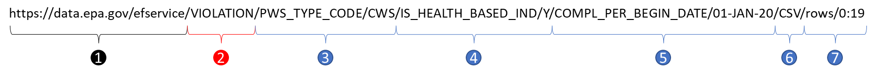

Introduction
EPA’s Envirofacts Data Service API provides access to its databases, including Safe Drinking Water Information System (SDWIS). We use data from SDWIS to calculate a measure (i.e., Drinking Water Violations) for CHRR rankings. We usually download data from SDWIS website for the previous year when data available in SDWIS is up to Quarter 3 of current year. For example, when SDWIS data is available up to 2022 quarter 3, we extract data for 01-JAN-2021 to 31-DEC-2021. In this post, I will show how we can use API to pull data from SDWIS.
SDWIS tables
SDWIS has nine tables (see SDWIS model), and we need data from two tables - VIOLATION and GEOGRAPHIC_AREA. I will only discuss VIOLATION table in this post.
There are 34 columns in VIOLATION table. We need to know a few of them before pulling data:
PWS_TYPE_CODE: A system-generated coded value which classifies the water system according to federal requirements. It includes Community Water Systems (CWS), Non-Transient Non-Community Water Systems (NTNCWS), and Transient Non-Community Water Systems (TNCWS). We need to set this to beCWS.IS_HEALTH_BASED_IND: Indicates if this is a health based violation (Y) or not (N). We need to set this to beY, i.e., YesCOMPL_PER_BEGIN_DATE: Compliance Period Begin Date - represents the beginning of a period of time when a public water system was in violation of a primary drinking water regulation. Note:COMPL_PER_BEGIN_DATEis a specific date, not a range; if we set COMPL_PER_BEGIN_DATE to be “01-JAN-21”, we get all violations on the date 01-JAN-21. To get violation data for one year, one way is to pull data for each day of the year and then assemble data together; another way is to extract all available data first and then subset based on the time range we need.PWS_ACTIVITY_CODE: Code that indicates the activity status of the public water system. The default for API is all systems, which is different from EPA’s web search default (active). Thus, for API data extraction, we do not need to specifyPWS_ACTIVITY_CODE.
Pull data from SDWIS
Construct a URL
The key to pulling data via data API is to construct a URL (Uniform Resource Locators), or a link, with a specific set of parameters (i.e., set up conditions for columns). For example, the following URL can help us pull first 20 rows of violation data in CSV format that are health based, for CWS water systems, and on date 01-JAN-20:
“https://data.epa.gov/efservice/VIOLATION/PWS_TYPE_CODE/CWS/IS_HEALTH_BASED_IND/Y/COMPL_PER_BEGIN_DATE/01-JAN-20/CSV/rows/0:19”
We can break up the URL into a few pieces and see what they mean.
1: Address to EPA data API
2: Table name: VIOLATION
3-7: specify parameters
3: set
PWS_TYPE_CODE=CWS4: set
IS_HEALTH_BASED_IND=Y5: set
COMPL_PER_BEGIN_DATE=01-JAN-206: set output data file type as
CSV. This is optional. If not specified, the defualt is XML. We can also choose the output format asJSONorExcel.7: select first 20 rows
rows=0:19(row number starts at 0). This is also optional. However, the output is limited to 10000 rows at a time. So, we are fine without specifying rows if the data has less than 10000 rows. But it is a good idea to know how many rows in the data we want to extract and decide if we need to specify rows.
Ways to extract data
The Simplest way to pull data is just to copy the link and paste it in a web browser (e.g., Google Chrome) and hit “enter” key. And be patient if you are pulling a large data set, because the web browser may show nothing after you clicked “enter”. This way is simple, but it may not be very reproducible. We may make and edit the URL in Word, since we need to specify a few parameters. Then copy the URL and paste it to Chrome. When we get the csv file, we will process it in SAS, Excel, or other software. So, we need to work at various places, i.e. using different software during the process.
Another way is to write a piece code in R, Python, or SAS. For example, we can use the following R code to extract the data:
url <- "https://data.epa.gov/efservice/VIOLATION/PWS_TYPE_CODE/CWS/IS_HEALTH_BASED_IND/Y/COMPL_PER_BEGIN_DATE/01-JAN-20/CSV/rows/0:19"
data <- readr::read_csv(url, show_col_types = FALSE)
data %>% DT::datatable()The extracted data is a dataframe. We can check how many rows and columns are in the file, save it for later processing, or start working on it right away. In other words, we can stay in one place (e.g., RStudio, a Python notebook), get almost everything done, and keep detailed notes for others and ourselves when we need to re-run the code later.
Extract violation data for one year
We need data for one year, i.e., 365 or 366 days. One way to do this is to construct a list of URL’s for all the dates, extract data, and assemble them together. Assume we need data from 01-JAN-20 to 31-DEC-20. Let’s first construct the list of URL’s.
Creaete a helper with a list of links we need
# define base url
url_base <- "https://data.epa.gov/efservice/VIOLATION/PWS_TYPE_CODE/CWS/IS_HEALTH_BASED_IND/Y/COMPL_PER_BEGIN_DATE/"
# define start date
start_date <- as.Date("2020/01/01")
# define end date
end_date <- as.Date("2020/12/31")
# generate range of dates
date_range <- seq(start_date, end_date, "days")
df_helper <- date_range %>%
as_tibble() %>%
mutate(date = format(value, "%d-%b-%y")) %>%
mutate(date = toupper(date)) %>%
select(date) %>%
mutate(url = paste0(url_base, date, "/CSV"))
df_helper %>% head()Loop through days to get data
# a empty list to save dataframes
df_list_vio <- list()
# loop
for( i in 1:nrow(df_helper)) {
print(paste0("date: ", df_helper$date[i]))
print(df_helper$url[i])
data <- read_csv(df_helper$url[i], col_types = cols(.default = "c"))
df_list_vio[[i]] <- data
}
# assemble data
df_vio <- df_list_vio %>%
map_dfr(bind_rows)- It took about 15 minutes to loop through all dates
Tidyverse style code
We can replace the for loop using map function and make the code more tidyverse style.
df_tidy_vio <- df_helper %>%
select(url) %>%
pull() %>%
map_dfr(~ read_csv(., col_types = cols(.default = "c")))Extract violation data by specifying rows
It takes time to make 365 or 365 extractions. A faster way is to extract all available data and then subset data for the time range we need. First, we need to find out how many rows we will pull if we do not specify a date. We will need to add the option “COUNT” in the query to get the information, like this:
“https://data.epa.gov/efservice/VIOLATION/PWS_TYPE_CODE/CWS/IS_HEALTH_BASED_IND/Y/COUNT”
You can put the URL in Chrome and see something like this:
<Envirofacts>
<RequestRecordCount>138068</RequestRecordCount>
</Envirofacts>If we want to do it in R, this is something we may do:
url_count <- "https://data.epa.gov/efservice/VIOLATION/PWS_TYPE_CODE/CWS/IS_HEALTH_BASED_IND/Y/COUNT"
httr::GET(url_count)%>%
#convert to text object using httr
httr::content(as = "text") %>%
str_extract_all(pattern = "(?<=RequestRecordCount\\>).+?(?=\\<)")So, there are way more than 10000 rows. We can following the instruction,
“the output is limited to 10000 rows of data at a time, but a user can pick which 10000 rows of data and then return to retrieve the next 10000.”
and we can make multiple extractions by specifying rows. Or can we set rows as “0:138067” (Note: the number of rows changes when new records are added into EPA database) and get all data in one extraction? It actually worked. Maybe Envirofacts made improvement and lifted the limit on the number of rows to exact?
Other software
We can use other software, such as Python and SAS, to extract data via API as well. Here is an example of using python to extract first 20 rows of violation data in CSV format that are health based, from CWS, and on 01-JAN-20:
import pandas as pd
url = "https://data.epa.gov/efservice/VIOLATION/PWS_TYPE_CODE/CWS/IS_HEALTH_BASED_IND/Y/COMPL_PER_BEGIN_DATE/01-JAN-20/CSV/rows/0:19"
data = pd.read_csv(url)
data.head()Here is an example of using SAS proc http:
filename data_api "C:\test.csv";
%let url = https://data.epa.gov/efservice/VIOLATION/PWS_TYPE_CODE/CWS/IS_HEALTH_BASED_IND/Y/COMPL_PER_BEGIN_DATE/01-JAN-20/CSV/rows/0:19;
proc http
url="&url"
method= "GET"
out=data_api;
run;
proc import
file=data_api
out=data
dbms=csv
replace;
run;References
Envirofacts Data Service API: the official website with guidance and instructions for EPS’s data service API
lead_water_acs_data: a github repository that has introduction of SDWIS
envirofacts: an R package that is intended for working with EPA data API. It has note been updated for a few years. I did not try the package but found the functions in the package are helpful.